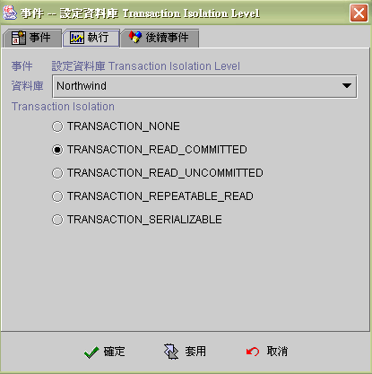

|

Transaction 交易
ACID characteristics
由事件控制 Isolation Level
-
ACID
characteristics ：Transaction
交易 (通常為一組完整的SQL命令) 必須具備的四項特性，稱之為
ACID，合適的交易存取權限設定，可以用來確保資料庫系統的一致性以及正確性，也是資料庫實現並行控制、故障回復控制的基礎。
-
Atomicty
原子：不可部分完成性。如同原子一般，一個交易被視為最小的運作單位，不容許分割的完整個體，也就是說交易的處理只有成功執行或是不執行，沒有模糊地帶。
-
Consistency
一致：每個交易所造成的資料異動，必須滿足資料庫整體資料的一致性，否則將拒絕此異動作業，還原原始資料。
-
Isolation
隔離：隔離性，資料庫系統可以同時處理多個交易，每個交易之間應當具備循序能力(Serializability)，所以當一個交易尚未完成時，所異動的資料是不可以被其他交易使用，以免不確定性的異動結果造成其他交易的不正確處理結果。
-
Durability
耐久：持續性，利用交易所處理的異動，在交易尚未結束前，不會變動原始資料，只有當交易完成後，才會將異動反映到資料庫。此時即使發生系統故障，也不會影響異動後的資料。
-
由事件控制 Isolation
Level ：jLIVE Builder 利用【事件】來控制 Isolation
Level，每一層級的設定，會決定交易鎖定(Lock)時間的長短，以及不同交易之間所造成的相互影響，也會因為所使用的層級差別，產生同時存取資料時，可能發生的潛在錯誤。
|
Isolation Level / 可能發生的錯誤 |
Lost Update |
Dirty Read |
Nonrepeatable Read |
Phantoms Read |
| Level 0 ：Read Uncommitted |
ˇ |
ˇ |
ˇ |
ˇ |
| Level 1 ：Read Committed |
|
|
ˇ |
ˇ |
| Level 2 ：Repeatable Read |
|
|
|
ˇ |
| Level 3 ：Serialized Read |
|
|
|
|

Copyright © 2001~
2004 Probe Technology . All Rights Reserved.
Questions, comments,
and suggestions to Service@probe.com.tw
|